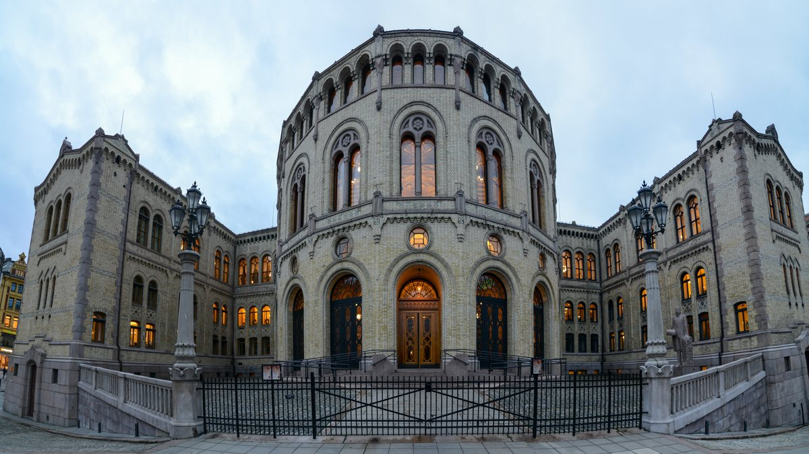

ज़ेलेंस्की यूक्रेन वार्ता ओस्लो ले गए, अमेरिकी दूत विटकॉफ़ और कुश्नर भी शामिल
ज़ेलेंस्की ने बुधवार को कहा कि वह मौजूदा अग्रिम पंक्तियों पर लड़ाई रोकने वाले शांति समझौते को स्वीकार करेंगे, जबकि अमेरिकी दूत स्टीव विटकॉफ़ ओस्लो वार्ता के प्रस्ताव सेंट पीटर्सबर्ग में पुतिन के पास ले गए।

मुख्य बिंदु
- रूसी राष्ट्रपति व्लादिमीर पुतिन ने बुधवार को अमेरिकी विशेष दूत स्टीव विटकॉफ़ से कहा कि मॉस्को युद्ध ख़त्म करने के लिए नवंबर में यूक्रेन और अमेरिका के साथ त्रिपक्षीय वार्ता फिर शुरू करने के लिए…
- उशाकोव ने कहा कि वार्ता का केंद्र संघर्ष ख़त्म होने के बाद रूस और यूक्रेन के लिए सुरक्षा गारंटी, और युद्ध के बाद दोनों देशों के लिए एक सुरक्षा व्यवस्था बनाना होना चाहिए। कॉन्स्टेंटाइन पैलेस में…
- मॉस्को का यह बयान नीचे दिए गए अद्यतन के बाद आया है, जिसमें राष्ट्रपति वोलोदिमिर ज़ेलेंस्की ने बुधवार को पहले कहा था कि वह मौजूदा अग्रिम पंक्तियों पर रोक स्वीकार करेंगे और त्रिपक्षीय वार्ता का…
अद्यतन 14:35 UTC, 21 अक्टूबर 2026: पुतिन ने कहा रूस नवंबर में त्रिपक्षीय वार्ता फिर शुरू करने के लिए सैद्धांतिक रूप से तैयार है
रूसी राष्ट्रपति व्लादिमीर पुतिन ने बुधवार को अमेरिकी विशेष दूत स्टीव विटकॉफ़ से कहा कि मॉस्को युद्ध ख़त्म करने के लिए नवंबर में यूक्रेन और अमेरिका के साथ त्रिपक्षीय वार्ता फिर शुरू करने के लिए सैद्धांतिक रूप से तैयार है, क्रेमलिन के सहयोगी यूरी उशाकोव ने सेंट पीटर्सबर्ग में उनकी बैठक के बाद कहा। फ़रवरी के बाद से ऐसी कोई वार्ता नहीं हुई है, रॉयटर्स ने बताया।
उशाकोव ने कहा कि वार्ता का केंद्र संघर्ष ख़त्म होने के बाद रूस और यूक्रेन के लिए सुरक्षा गारंटी, और युद्ध के बाद दोनों देशों के लिए एक सुरक्षा व्यवस्था बनाना होना चाहिए। कॉन्स्टेंटाइन पैलेस में हुई बैठक करीब तीन घंटे चली। CNN ने बताया कि अभी तक ऐसे कोई संकेत नहीं हैं कि रूस अपनी पिछली मांगों से पीछे हटा हो, जिनमें यूक्रेन का पूरा डोनबास क्षेत्र छोड़ना, अपनी सेना में भारी कटौती करना और नेटो में कभी शामिल न होने का वादा करना शामिल है।
मॉस्को का यह बयान नीचे दिए गए अद्यतन के बाद आया है, जिसमें राष्ट्रपति वोलोदिमिर ज़ेलेंस्की ने बुधवार को पहले कहा था कि वह मौजूदा अग्रिम पंक्तियों पर रोक स्वीकार करेंगे और त्रिपक्षीय वार्ता का समर्थन किया था।
अद्यतन 13:43 UTC, 21 अक्टूबर 2026: ज़ेलेंस्की ने कहा वह मौजूदा अग्रिम पंक्तियों पर रोक स्वीकार करेंगे
राष्ट्रपति वोलोदिमिर ज़ेलेंस्की ने बुधवार को कहा कि वह एक शांति समझौता स्वीकार करेंगे जो मौजूदा अग्रिम पंक्तियों पर लड़ाई को रोक दे, एक कदम जिसका उन्होंने युद्ध में पहले विरोध किया था। फ़ॉक्स न्यूज़ के कार्यक्रम फ़ॉक्स एंड फ्रेंड्स में यह पूछे जाने पर कि क्या वह सब कुछ जैसा है वैसा ही रोक देंगे, जबकि यूक्रेन के पास उसके देश का 75 प्रतिशत या अधिक हिस्सा रहेगा, उन्होंने हाँ कहा।
"अभी हमें रोकना होगा, और मुझे लगता है कि यह युद्ध खत्म करने का असली तरीका है", ज़ेलेंस्की ने रॉयटर्स और न्यूयॉर्क पोस्ट के अनुसार कहा। "हम इसे युद्धविराम कहते हैं। राष्ट्रपति ट्रम्प ने इसे फ्रीज़ और स्टॉप कहा"। उन्होंने कहा कि रोक ही आज रूस से चाहिए न्यूनतम है, और कीव फिर राष्ट्रपति डोनाल्ड ट्रम्प और यूरोपीय साझेदारों के पास सुरक्षा गारंटी के लिए जाएगा ताकि कब्ज़ा और आक्रमण वापस न आए।
ज़ेलेंस्की ने कहा कि डोनबास क्षेत्र छोड़ना उचित नहीं होगा, और कहा कि रूसी सेनाएँ युद्ध के मैदान में जीत नहीं रही हैं। उन्होंने कहा कि मंगलवार को ओस्लो में अमेरिकी दूत स्टीव विटकॉफ़ के साथ उनकी वार्ता उत्पादक रही, यूक्रेन कूटनीति के लिए तैयार है, और वह यूक्रेन, अमेरिका और रूस के बीच यूरोपीय देशों को भी शामिल करके त्रिपक्षीय वार्ता का समर्थन करते हैं। उन्होंने खुफिया साझेदारी बहाल करने के लिए अमेरिका को धन्यवाद दिया और कहा कि उन्हें उम्मीद है कि स्टारलिंक और स्टारशील्ड उपग्रह सेवाओं पर सीमाएँ जल्द हटेंगी। उन्होंने कहा कि उन्हें उम्मीद है कि बुधवार को सेंट पीटर्सबर्ग में विटकॉफ़ की रूसी राष्ट्रपति व्लादिमीर पुतिन से मुलाकात का सकारात्मक परिणाम आएगा।
20 अक्टूबर की ओस्लो रिपोर्ट नीचे है।
यूक्रेन के राष्ट्रपति वोलोदिमिर ज़ेलेंस्की मंगलवार को युद्ध और यूरोपीय सुरक्षा पर वार्ता के लिए ओस्लो में थे, यह यात्रा कम समय की सूचना पर तय हुई, जब कीव और वाशिंगटन के बीच संबंध एक और निचले बिंदु पर पहुंच गए।
नॉर्वे और फिनलैंड ने बैठक की मेजबानी की। ज़ेलेंस्की ने नॉर्वे के प्रधानमंत्री योनास गार स्टोरे और फिनलैंड के राष्ट्रपति अलेक्जेंडर स्टब से मुलाकात की, और अमेरिकी विशेष दूत स्टीव विटकॉफ़ और जेरेड कुश्नर भी बैठकों में शामिल हुए, फिनलैंड के राष्ट्रपति कार्यालय ने कहा। नॉर्वे ने पुष्टि की कि कुश्नर दूर से शामिल हुए।
कीव के कहने पर हुई बैठक
स्टोरे ने कहा, राष्ट्रपति ज़ेलेंस्की ने नॉर्वे और फिनलैंड से कहा है कि वे यूक्रेन के लिए इस कठिन समय में चल रहे कूटनीतिक प्रयासों के हिस्से के रूप में एक बैठक आयोजित करें। उन्होंने कहा कि उद्देश्य कूटनीतिक प्रयासों को अधिक रचनात्मक रास्ते पर ले जाना था, और दोनों अमेरिकी दूतों की भागीदारी यूक्रेन ने ही मांगी थी।
यात्रा के दौरान ज़ेलेंस्की ने शाही महल में राजा हाकोन से भी मुलाकात की और नॉर्वे की संसद स्टोर्टिंग जाकर उसके अध्यक्ष और संसदीय नेताओं से मिले। बैठक के बाद ज़ेलेंस्की, स्टब और स्टोरे की एक संयुक्त प्रेस वार्ता तय थी।
मिसाइल, चेतावनी और सैटेलाइट
वार्ता से पहले ज़ेलेंस्की ने कहा कि उन्होंने अमेरिकी विदेश मंत्री मार्को रुबियो से बैलिस्टिक मिसाइल इंटरसेप्टर, रूसी मिसाइल हमलों की पूर्व चेतावनी और स्टारलिंक व स्टारशील्ड की स्थिति पर बात की, स्पेसएक्स के वे सैटेलाइट सिस्टम जिन्हें यूक्रेनी सेनाएं इस्तेमाल करती हैं और जिनके बारे में उन्होंने कहा कि उन्हें बहाल करने की जरूरत है।
कीव का कहना है कि वाशिंगटन ने हाल में रूसी मिसाइल प्रक्षेपणों की पूर्व चेतावनी नहीं दी, यूक्रेनी ड्रोन को रास्ता दिखाने वाले सैटेलाइट संपर्क सीमित कर दिए, और यूरोपीय सहयोगियों द्वारा भुगतान की गई हवाई सुरक्षा भी नहीं दी। ज़ेलेंस्की ने सोमवार को अमेरिकी सीनेटरों से कहा कि पेंटागन उन मिसाइलों की आपूर्ति में देरी कर रहा है जिनका भुगतान यूरोपीय देश पहले ही कर चुके हैं, और वह खेप रक्षा मंत्री पीट हेगसेथ के हस्ताक्षर का इंतजार कर रही है। उन्होंने कहा कि कई यूरोपीय देश अपने भंडार से पैट्रियट इंटरसेप्टर देने को तैयार हैं, लेकिन उन्हें अभी भी अमेरिकी मंजूरी चाहिए।
सोमवार को उज्बेकिस्तान की यात्रा पर गए रुबियो ने इस बात से इनकार किया कि यूक्रेन के साथ खुफिया जानकारी साझा करना बंद किया गया है, और ज़ेलेंस्की द्वारा संघर्ष खत्म करने पर ध्यान देने के ट्रम्प के आह्वान का समर्थन किया।
ट्रम्प ने मॉस्को की तारीफ की, कीव को फटकार लगाई
सोमवार को राष्ट्रपति डोनाल्ड ट्रम्प ने कहा कि रूस यूक्रेन पर ठीक रहा है और ज़ेलेंस्की कुछ खास मदद नहीं कर रहे। उन्होंने कहा कि कीव को युद्ध खत्म करने की बातचीत के लिए किसी और को ढूंढना चाहिए।
ट्रम्प के नेतृत्व में अमेरिका ने यूक्रेन को हथियार भेजना काफी हद तक बंद कर दिया है, लेकिन वह अब भी यूरोपीय देशों को कीव की ओर से अमेरिकी हथियार खरीदने देता है और ऐसी खुफिया जानकारी व तकनीक देता है जिसकी बराबरी यूरोप नहीं कर सकता।
विटकॉफ़ और कुश्नर ने आखिरी बार 5 सितंबर 2026 को मॉस्को में रूसी राष्ट्रपति व्लादिमीर पुतिन से मुलाकात की थी, तीन घंटे से अधिक चली उस वार्ता से कोई सार्वजनिक सफलता नहीं मिली। विटकॉफ़ के ओस्लो के बाद रूस जाने की उम्मीद थी, यूक्रेन और उसके यूरोपीय साझेदारों के साथ तैयार किए गए विचार पेश करने के लिए।
ज़ेलेंस्की के लिए ओस्लो की यह यात्रा कूटनीति को कीव की ओर वापस ले जाने का मौका थी, मेज पर दो यूरोपीय मेजबानों और वाशिंगटन के दूतों की भागीदारी के साथ, उस समय जब उनके देश की निर्भर अमेरिकी मदद खुली बहस का विषय बन गई है।
स्रोत
नॉर्वे सरकार, फिनलैंड के राष्ट्रपति कार्यालय, रॉयटर्स और AFP।
टाइमलाइन
- Sep 5, 2026अमेरिकी दूत स्टीव विटकॉफ़ और जेरेड कुश्नर मॉस्को में रूसी राष्ट्रपति व्लादिमीर पुतिन से तीन घंटे से अधिक मुलाकात करते हैं। वार्ता से कोई सार्वजनिक सफलता नहीं मिलती।
- Oct 19, 2026ट्रम्प कहते हैं कि रूस यूक्रेन पर ठीक रहा है और कीव को बातचीत के लिए किसी और को ढूंढना चाहिए। ज़ेलेंस्की अमेरिकी सीनेटरों से कहते हैं कि पेंटागन यूरोपीय देशों द्वारा भुगतान की गई मिसाइलों में देरी कर रहा है।
- Oct 20, 2026ज़ेलेंस्की ओस्लो में स्टोरे और स्टब से मिलते हैं, विटकॉफ़ और कुश्नर बैठकों में शामिल होते हैं, और राजा हाकोन से मुलाकात करते हैं।
- Oct 21, 2026ज़ेलेंस्की फ़ॉक्स न्यूज़ से कहते हैं कि वह मौजूदा अग्रिम पंक्तियों पर लड़ाई रोकने वाला शांति समझौता स्वीकार करेंगे, और यूक्रेन, अमेरिका और रूस के बीच त्रिपक्षीय वार्ता का समर्थन करते हैं।
- Oct 21, 2026पुतिन सेंट पीटर्सबर्ग में विटकॉफ़ से कहते हैं कि रूस युद्ध के बाद सुरक्षा गारंटी पर केंद्रित, नवंबर में यूक्रेन और अमेरिका के साथ त्रिपक्षीय वार्ता फिर शुरू करने के लिए सैद्धांतिक रूप से तैयार है।
स्रोत
- Norwegian Government: Ukrainian President Volodymyr Zelensky in Norway
- Office of the President of Finland: President Stubb to pay working visit to Oslo
- Reuters: Ukraine's Zelenskiy travels to Norway for talks on war, security on Tuesday
- AFP: Zelensky, US envoys to hold Oslo talks as Ukraine claims US missile holdup
- Reuters: Ukraine's Zelenskiy says he supports ceasefire, trilateral talks with US, Russia
- New York Post: Ukraine's Zelensky says he'd accept peace deal with Russia that 'freezes' front lines
- Reuters: Russia is willing in principle to join new Ukraine peace talks in November, Kremlin says
- CNN: US envoy Witkoff meets with Putin in effort to advance proposals to end war in Ukraine
- New York Post: Putin agrees to trilateral talks with Ukraine, US to end war